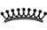
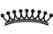

İktidar Mekânları
Luigi Carlo Schiavi
Kralın ikamet ettiği saray aynı zamanda kabul mekânı ve idari merkezdir ve ortaçağın tamamı boyunca iktidarı temsil eden yapıdır. Farklı mekânsal çözümler yoluyla da olsa, Roma imparatorluk sarayı modeli belirleyici bir rol oynar. Constantinus döneminden itibaren resmi idare alanına dahil edilen dini iktidarın merkezleri dahil olmak üzere (örneğin Pore’teki piskoposluk konağı), VI ile VIII. yüzyıllar arasındaki en önemli girişimler bu erişilmez prototiple olan bağdan kaynaklanır. Yeni Roma-Barbar kralları, yönetimlerinin meşruiyetinin bir göstergesi olarak Roma döneminden kalan resmi konaklara yerleşir. Kuzey Avrupa’da Karolenjler saraylarını proje tercihlerinin daha önceden var olan binalarla şartlanmadığı geniş boş alanlara inşa eder, dolayısıyla klasik konut modellerini benimsemek daha kolay olur. Bu yapıların en önemli örneği olan Aquisgrana sarayının ünlü saray şapeli çok iyi durumda günümüze ulaşmıştır. Roma’da, Laterano’da bulunan ve Papa III. Leo’nun VIII. yüzyılda geniş çaplı değişiklikler gerçekleştirdiği Papalık sarayı, bir o kadar geniş ve abartılı bir siyasal manifesto olarak Aquisgrana sarayıyla tezat oluşturur.
Saraylar
Siyasi iktidarın merkezi
İktidarın uygulama ve temsil alanı ortaçağ boyunca da saraylarla özdeşleştirilmeye devam eder. Saray, kralın konutu ve kabul mekânı, evrak dairesinin sabit idari merkezidir. Sarayla bağlantılı olan şapel, iktidar sahibi hanedanın tapınağı, kralın özel ibadet yeri ve krallık kavramının kökeninde yatan, Tanrı’yla arasındaki kişisel ilişkinin mekânıdır. Resmi ve özel işlevler bütünü mimari açıdan çok farklı proje çözümlerine konu olur, ama Roma imparatorluk sarayı erişilmez bir biçimsel modelive ortaçağın tamamı boyunca saray mimarisi alanında meşru ve evrensel hâkimiyet simgesi olmaya devam eder.
Kilise otoritesinin merkezi
Bu arada kentsel ortamlarda kilise de kendi otoritesinin ifadesi olarak anıtsal ölçekte dini yapılar inşa ettirmeye başlar. Constantinus döneminden itibaren din adamlarının resmi idari sisteme dahil edilmesi, Batı Roma İmparatorluğu’nun çöküşünden sonra aşırı derecede güçlenecek bir mekanizmayı, sivil ve idari işlevlerin de facto kiliseye aktarılması sürecini başlatır. Roma’da ve imparatorluğun başlıca şehirlerinde domus episcopalis’in, [piskoposun evi] mimari açıdan büyümesi, piskoposun ruhani ve dünyevi gücünün ikili yönünü yansıtır. Şehir surlarının içinde yer alan katedral bir veya iki ibadet salonu, bir vaftizhane, rahipler için konutların ve hizmet mekânlarının yanı sıra imparatorluk döneminin resmi yapılarından ödünç alınmış temsiliyet mekânları içerir. İstria’da bulunan ve piskopos Euphrasius dönemine (VI. yüzyıl) ait Pore Katedrali’nin geç Roma saraylarına özgü tarzı belirgin şekilde yansıtan piskoposluk sarayı, günümüze mükemmel bir şekilde ulaşmış bir piskoposluk kabul salonu örneği oluşturur. Burada piskoposluk bölgesi resmi iktidar mekânlarına fiziksel olarak bir tezat oluşturur. Maximianus (y. 240-310,  > 286) döneminde başkent olan, iki kutbun şehir merkezine göre zıt bölgelerde bulunduğu Milano bu açıdan çok anlamlı bir örnektir: Şehrin güneybatısında, erken ortaçağ boyunca çöküş dönemine girip 1000 yılına gelindiğinde sadece belli belirsiz anısı ve birkaç yer adı (San Giorgio in Palazzo Kilisesi) kalacak olan imparatorluğun engin konut bölgesi, kuzeydoğusunda da Ambrosius (y. 339-397,374’ten itibaren piskopos) döneminden Karolenj dönemine kadar ve Aribert’in (y. 975-1045, 1018’den itibaren piskopos) piskoposluğu sırasında piskoposun siyasal önemindeki artışla beraber çarpıcı derecede genişlemiş olan katedral yapı grubu bulunur.
> 286) döneminde başkent olan, iki kutbun şehir merkezine göre zıt bölgelerde bulunduğu Milano bu açıdan çok anlamlı bir örnektir: Şehrin güneybatısında, erken ortaçağ boyunca çöküş dönemine girip 1000 yılına gelindiğinde sadece belli belirsiz anısı ve birkaç yer adı (San Giorgio in Palazzo Kilisesi) kalacak olan imparatorluğun engin konut bölgesi, kuzeydoğusunda da Ambrosius (y. 339-397,374’ten itibaren piskopos) döneminden Karolenj dönemine kadar ve Aribert’in (y. 975-1045, 1018’den itibaren piskopos) piskoposluğu sırasında piskoposun siyasal önemindeki artışla beraber çarpıcı derecede genişlemiş olan katedral yapı grubu bulunur.
Geri kazanımlar ve yeni yapılar
VI. yüzyılın başında Bizans imparatoru I. Anastasius (y. 430-518) Galya üzerindeki iktidarını ve bunlara bağlı olarak sarayları kullanma hakkını Clovis’e (y. 466-511) devreder. Yeni Roma-Barbar kralları, yönetimlerinin meşruiyetinin bir göstergesi olarak Roma döneminin resmi saraylarına (imparatorluk sarayları ile valilerin praetoriumları) yerleşir. Theodoric (y. 451-526,  > 474) Ravenna’daki Honorius’un (384-423) sarayını restore ettirir (bu sarayın Sant’Apollinare Nuovo’da bulunan mozaik şeklindeki tasviri günümüze ulaşmıştır) ve Pavia ile Verona’da bulunan ve sonradan Longobardların kullanacağı resmi sarayları gezgin sarayının konutları haline getirir. Monza’da bulunan Theodolinda’nın (?-627,  > 589) sarayı gibi başka yapılar hakkında fazla bilgi sahibi değiliz, ama Corteleona gibi kırsal curtes regiae’da [krallık avluları] yeni merkezler kurulur. Krallığın merkezi sarayı dükalık saraylarına, Karolenj döneminde de comitatus saraylarına örnek teşkil eder. Merkezi düzenin dağılması ve IX ila X. yüzyıllardan itibaren bölgesel beylerin güçlenmesiyle sayıları giderek artan sarayların -ve dini iktidar merkezlerinin- ortak noktası, giderek acil hale gelen savunma ihtiyaçlarına bağlı yeni mimari nitelikler olacaktır.
> 474) Ravenna’daki Honorius’un (384-423) sarayını restore ettirir (bu sarayın Sant’Apollinare Nuovo’da bulunan mozaik şeklindeki tasviri günümüze ulaşmıştır) ve Pavia ile Verona’da bulunan ve sonradan Longobardların kullanacağı resmi sarayları gezgin sarayının konutları haline getirir. Monza’da bulunan Theodolinda’nın (?-627,  > 589) sarayı gibi başka yapılar hakkında fazla bilgi sahibi değiliz, ama Corteleona gibi kırsal curtes regiae’da [krallık avluları] yeni merkezler kurulur. Krallığın merkezi sarayı dükalık saraylarına, Karolenj döneminde de comitatus saraylarına örnek teşkil eder. Merkezi düzenin dağılması ve IX ila X. yüzyıllardan itibaren bölgesel beylerin güçlenmesiyle sayıları giderek artan sarayların -ve dini iktidar merkezlerinin- ortak noktası, giderek acil hale gelen savunma ihtiyaçlarına bağlı yeni mimari nitelikler olacaktır.
Kuzey Avrupa
Siyasi manifesto olarak Karolenj sarayları
İtalya’da Karolenjler resmi binaların restorasyonunu teşvik etmeye devam ederken bir yandan da dini kurumların yeniden düzenlenmesiyle kısa süre içinde kentsel ortama hâkim hale gelecek katedrallerin güçlendirilmesini destekler. Oysa iktidarlarının coğrafi merkezi Kuzey Avrupa’da Karolenjler devasa saraylarını hanedanın eski topraklarıyla bağlantılı ve stratejik açıdan önemli olan geniş boş alanlara inşa eder. Buradaki proje tercihleri daha önceden var olan binalarla uyumlu olmadığı için, imparatorluk geleneğine bağlı kalıp klasik konut modellerini benimsemek daha kolay olur. Geliştirilen inşa programları gerçek anlamda siyasi manifestolar oluşturur ve sonraki yüzyıllarda Otto dönemindeki saray mimarisi için örnek teşkil eder.
Şarlman ve antikçağdan kalanların geri kazanımı
Arkeolojik kazılar sayesinde Paderborn ve İngelheim gibi Karolenj dönemine ait bazı konutlar keşfedilmiştir, ancak kısmen muhafaza edilmiş olan Aquisgrana’daki ana saray, yani “ikinci Roma” bütün diğer mimari türlere göre yeni imparatorluğun yeni mevkiini en iyi şekilde temsil eder; nitekim Aquisgrana’nın en karakteristik unsuru olan Saray Şapeli IX ile XI. yüzyıllar arasında birçok kez taklit edilmiştir (örneğin 972-1008 arasında Liege’de Saint-Jean-l’Evangeliste, 1030-1049 arası da Ottmarsheim’da Santa Maria kiliseleri). Aquisgrana’da da güneyde kutsal, kuzeyde konut-temsiliyet merkezi olmak üzere iki kutup olduğu açıkça bellidir. Apsisli büyük bir dikdörtgen (47,5 x 20,8 m) şeklinde olan kraliyet salonu Constantinus’un (285-337) Trier’deki saray bazilikasından örnek alınmıştır, ama uzun kenarları üzerinde iki eksedra da bulunur. Güneyinde bulunan revak, bu yapının batısında bulunan ve saray şapeline götüren iki katlı uzun koridora bağlanır. Eskiden batısında revaklı bir avlu ve bir Westwerk27 bulunan ve dışarıdan on altı kenarı olan şapelin merkezindeki sekiz kenarlı merkez sekiz parçalı bir kubbeyle kaplıdır ve çevresinde galerili bir ambülatuar bulunur. Matroneum ün diğer revakları iki sıra sütundan oluşur, inşaatta kullanılan değerli malzemeler için Şarlman (742-814) Papa’nın izniyle Roma ve Ravenna’daki eski eserlerden devşirme malzeme elde eder. Bronzdan bölmeler gibi, bu yapı için özel olarak imal edilen donatımlardaki klasisizm, Karolenj renovatio döneminin en belirgin simgelerinden birini oluşturur. Özellikle İsa’nın vahiye dayalı, göklerdeki Kudüs’te kral olarak resmedildiği kubbenin mozaik süslemeleri olağanüstü olmalıydı. Simgesel açıdan İsa’ya tekabül eden ve onun yeryüzündeki sureti olan imparatorun tahtı da matroneum’un batı yönündeki alanda bulunurdu.
Papalık sarayları
Aynı yıllarda, Constantinus Bağışı adı altındaki ünlü sahte belgenin üretilmesiyle kendi özerk ve evrensel iddialarını dayandıracak temel bir araç edinmiş olan Papalık da Roma’da, Laterano bölgesinde büyük ölçekli değişiklikler yapmaya başlar; bu bölge IX. yüzyıldan itibaren patriarchium [piskoposluk] yerine, imparatorluk mevkiine uygun şekilde saray olarak bilinecektir. VII. Johannes (695-707 arası papa) VIII. yüzyılın başlarında Papalık konutunu Palatino Tepesine nakletmeyi, dolayısıyla da imparatorun iktidar merkezine yerleşmeyi düşünürse de, Zacharias (741-752 arası papa) ile I. Hadrianus (772-795 arası papa) Laterano’daki merkeze bir sundurma, yeni konut yapıları ve zengin süslemeler ekler. Yüzyılın sonlarında ise Papa III. Leo (795-816 arası papa) iki büyük yemek salonu yaptırır. 1588’de yıkılmış olan birincisi, sonda bir tane büyük, uzun kenarları üzerinde de beş tane olmak üzere tam on bir apsisi olan dikdörtgen bir yapıydı. Burada örnek alınan modelin, Konstantinopolis imparatorluk sarayında “on dokuz divan” olarak bilinen yemek salonu olduğu kesindir. Üç apsisli olan ikincisi (798-799) Laterano’daki konutun doğu kanadında bulunurdu ve büyük apsisinin mozaik süslemelerinde hem Konstantinopolis’e hem de Aquisgrana’ya yönelik olarak Papalığın siyasal programının ana fikrini içerirdi. Havarilerin Misyonu’nun resmedildiği apsisin kubbesinin solunda İsa’nın Constantinus’a bir arma, Aziz Petrus’a da bir cüppeyi teslim edişi görülürdü; sağ tarafta ise cüppeyi Papa Leo’ya, armayı da, kilisenin savunucusu ve antikçağda Bağış’ın sahibi imparatorun aynadaki sureti olan Şarlman’a sunan Aziz Petrus resmedilmişti.
Bkz.
Tarih: Roma Kilisesi ‘nin Yükselişi, s. 146; Roma Kilisesi ve Papaların Dünyevi Gücü, s. 151; İmparatorlar ve İkonoklazm, s. 177; Anarşi Döneminde Papalık, s. 244